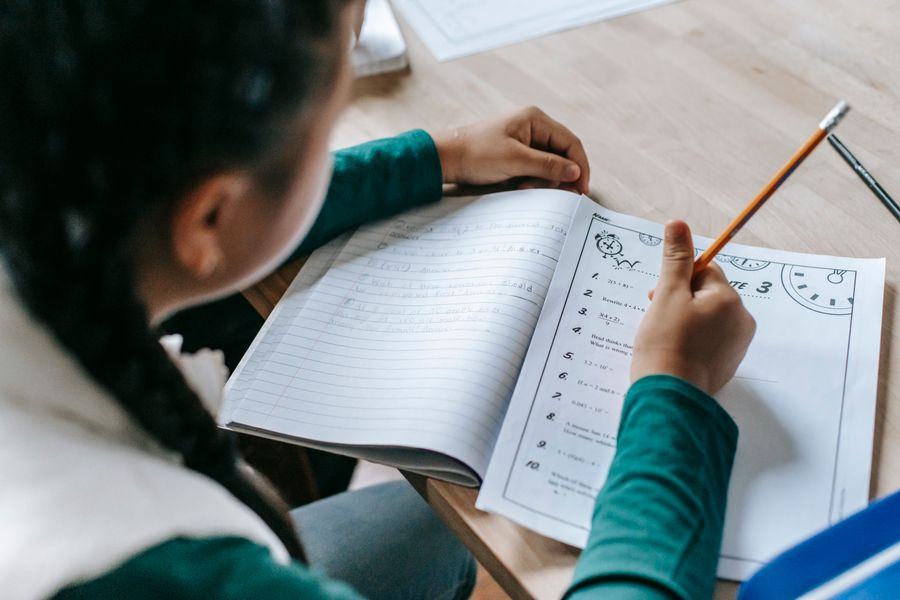

The reading list
학년마다 한 학기 여섯 권. 책은 모두 교실에서 빌려 갑니다.
Grade 1–3초등 저학년 · 등대 모둠
- 강아지똥3월 · 그림책
- 만년샤쓰4월 · 단편
- 소가 된 게으름뱅이4월 · 옛이야기
- 플랜더스의 개5월 · 동화
- 흥부와 놀부6월 · 옛이야기
- 이솝 우화 골라 읽기6월 · 우화
Grade 4–6초등 고학년 · 과수원 · 깃펜
- 어린 왕자3월 · 장편
- 샬롯의 거미줄4월 · 장편
- 홍길동전4월 · 고전
- 톰 소여의 모험5월 · 장편
- 80일간의 세계 일주6월 · 모험
- 빨간 머리 앤6월 · 장편
Middle중등 · 나침반 모둠
- 허생전3월 · 고전
- 동물 농장4월 · 우화 소설
- 운수 좋은 날5월 · 단편
- 소나기5월 · 소설
- 지킬 박사와 하이드6월 · 중편
- 논설문 세 편 비교6월 · 신문
책 목록은 학기마다 모둠 투표로 두 권씩 바꿉니다. 집에 같은 책이 있어도 교실 책으로 읽습니다 — 밑줄 친 자리를 모둠이 함께 봅니다.
What a corrected page looks like
첨삭 노트 한 장을 그대로 옮겼습니다.
나는 허생이 나쁘다고 생각한다 돈을 다 버린 것이 아깝다고 생각한다. 왜냐하면 그 돈으로 섬 사람들을 더 도울 수 있었기 때문이다. 그래서 재밌었다.
메모 — ‘나쁘다’보다 무엇이 아까운지 적으니 주장이 분명해졌어요. 마지막 문장은 빼고, 내가 허생이라면 돈을 어디에 썼을지 한 문장 더 써 봅시다.
